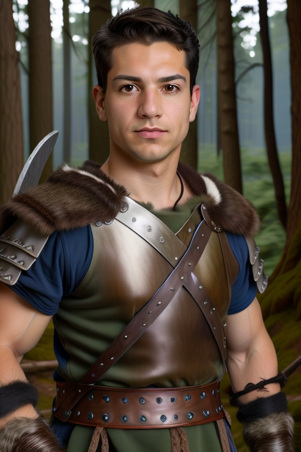

"Un hombre en la nieve"
Resultado 1:
"Un guerrero en el bosque, usa una escala media alta como el 78% de esto"
Resultado 2:

Con la función de Retrato en AiCasso, puedes crear retratos asombrosos y únicos simplemente describiendo lo que deseas. ¡Es perfecta para hacer imágenes impresionantes, ya sea que quieras una escena serena, un guerrero épico o cualquier otra cosa que tu imaginación pueda conjurar!
"Un hombre en la nieve"
Resultado 1:
"Un guerrero en el bosque, usa una escala media alta como el 78% de esto"
Resultado 2:¿Quieres añadir un poco más de estilo o control a tus retratos generados? Aquí hay algunas opciones interesantes que puedes ajustar:
Recuerda, estos parámetros son totalmente opcionales. AiCasso es bastante indulgente, así que no tienes que ser super preciso o gramaticalmente correcto. Simplemente describe lo que quieres con tus propias palabras, y AiCasso hará la magia. ¡Diviértete creando tus retratos!